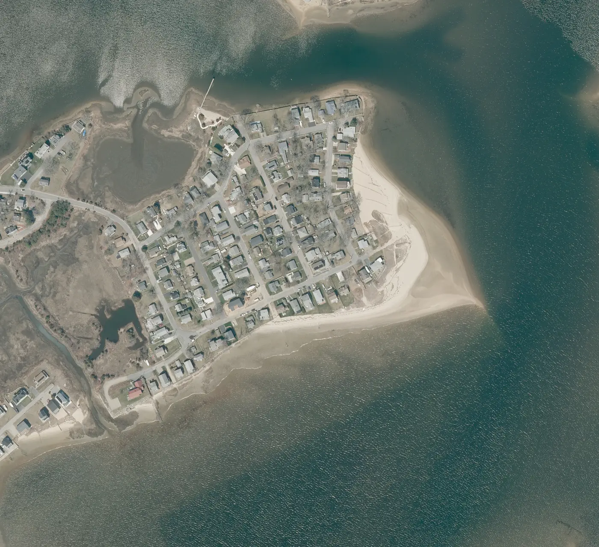
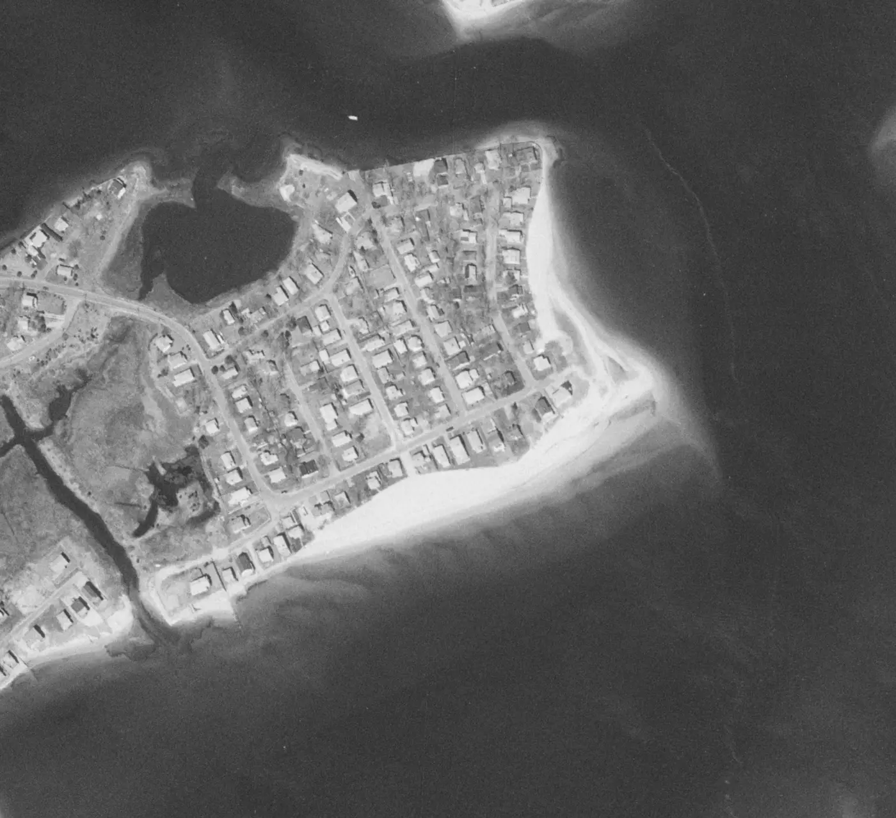
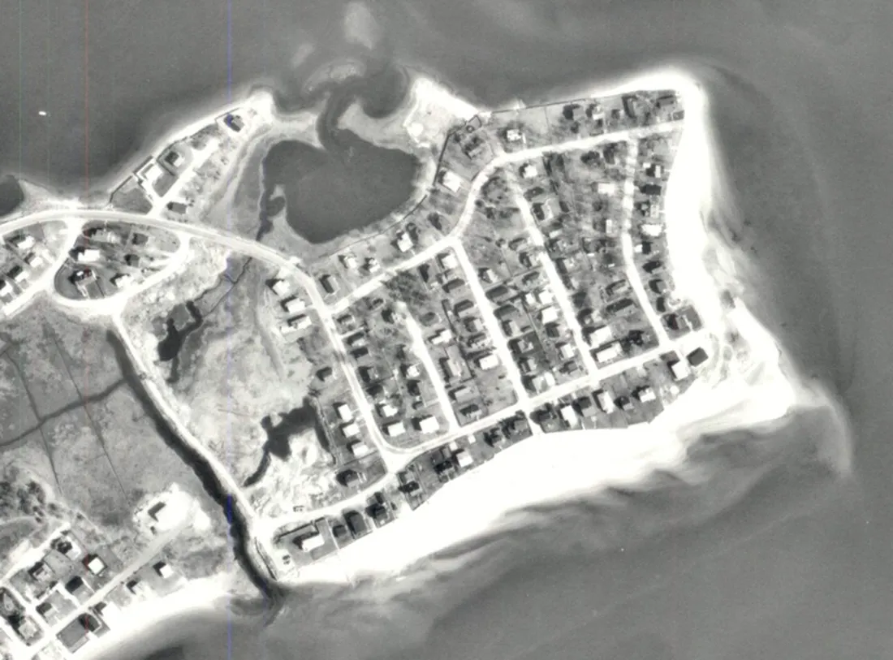
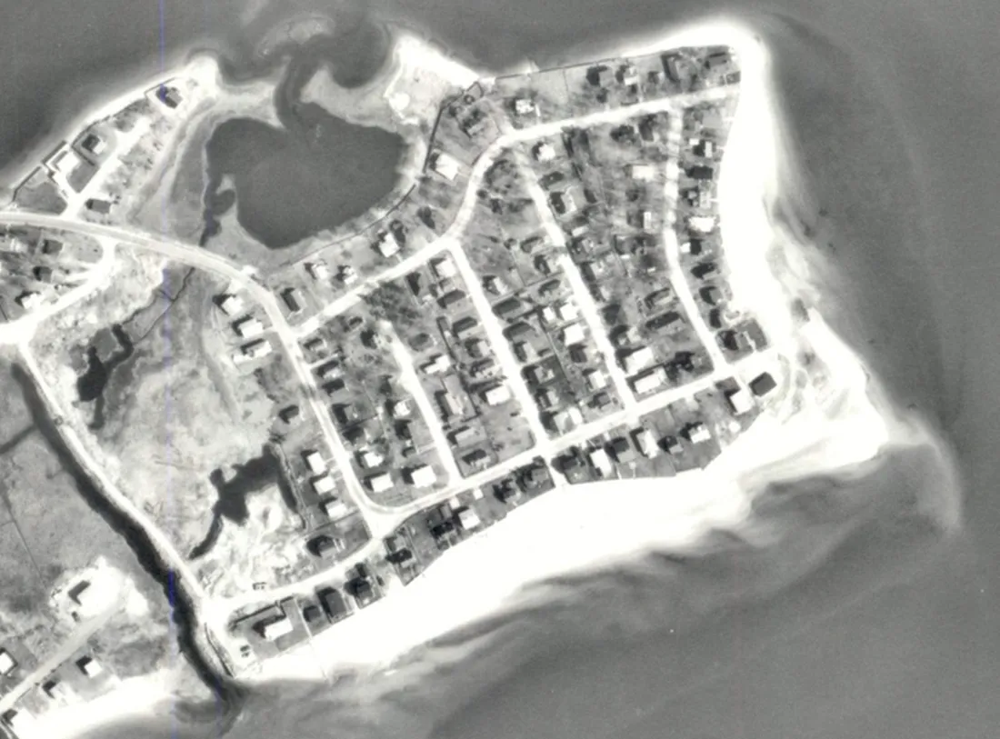
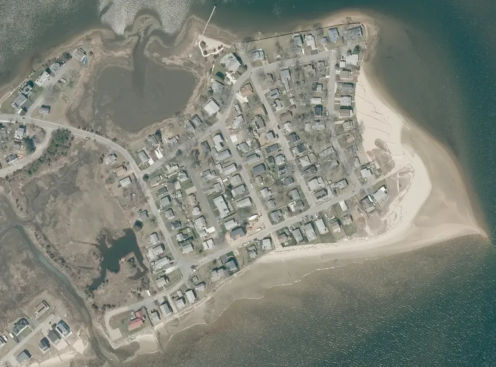

Where the sand goes
Winter storms pull sand off the beach onto an underwater bar; summer waves bring most of it back. What does not come back drifts east to the point, past the end of the old jetties.
See the photographs belowSand School · the short version
Our beach is a slow river of sand. Waves push sand from the middle of the beach toward the east point. More leaves than arrives, so the middle gets narrower every year.
Winter storms pull sand off the beach onto an underwater bar; summer waves bring most of it back. What does not come back drifts east to the point, past the end of the old jetties.
See the photographs belowReal aerial photographs. Each numbered marker is a spot losing sand; tap one to see how fast. Pick a year, or compare 1995 with 2025.


Photos: MassGIS and USGS aerial orthoimagery. Tides differ between photos, so the waterline moves a little even when the beach doesn't.
The 1A Worrall groin stays in every run. Tick the two 100-foot jetties on or off, choose how much sand to pre-fill, then press Play 20 years and watch the beach. Orange zones show where to put the sand.
Previously all structures followed the local shoreline normal. They now have separate image-based orientations. The installed 1A groin stays fixed at an approximate 160° display bearing. Jetty 2 starts at 158° and Jetty 3 at 169°, visually traced from your circled 1938 photo. These are estimates, not survey bearings; a historical photo does not establish an approved rebuild alignment.
Bearings are clockwise from image north: 90° east, 180° south. The aerial is treated as north-up. Use these controls to explore orientation uncertainty, not to select a construction angle. The model adjusts only cross-shore projected length, not full coastal dynamics.
The earlier “15–30 ft” placement estimate was not a measured error bound. Historical registration and structure endpoints remain uncertain. A measured/as-built plan and coastal-engineer review are needed for reliable design or forecasts.
How it works: a simplified "one-line" shoreline model on a 5 m grid, using an assumed west-to-east transport direction and idealized sand trapping. The no-action scenario uses the imported 1978–2013 shoreline-change trend (USGS/CZM). Historical positions and angles are image estimates with no measured error bound. Angle changes adjust the drawn structure and its cross-shore projection, not a calibrated wave or sediment model. This is a teaching model, not an engineering design or a prediction of construction performance.
Five more lessons with the surveys, photographs from 1938 on, a year-by-year timeline and the wind models behind the fence plan.
Waves usually hit the beach at an angle. Each wave pushes sand up the beach at that angle, and the backwash pulls it straight down. Repeat that thousands of times a day and the sand zig-zags along the shore. Scientists call this longshore drift. At Hamilton Beach the winds and waves come mostly from the south and southwest, so sand drifts from west to east, toward the point.
Every stretch of beach loses sand downstream. It only stays the same size if the same amount of new sand arrives from upstream. When something blocks the supply, such as walls, jetties or groins to the west, that stretch shrinks. That shrinking is erosion. The sand isn't destroyed. It just moved somewhere else.
The sand ends up wherever the drift slows down: against a groin, around a point, or in a quiet corner. At Hamilton Beach that's the east point and the south end of the Reynolds Avenue side beach. Those parts have been growing while the middle of the beach shrinks.
The beach also breathes in and out with the seasons. Drag the slider through the year.
Why it matters: sand that storms move offshore mostly comes back in spring, but not all of it. Where there's no beach in front of a wall, waves hit the wall directly, dig out sand at its base, and send that sand away for good. That's why the winter plan places sand in the fall, so it's ready to take the storms' energy.
These two historic aerial prints, from 1938 and 1971, show Hamilton Beach decades before the modern MassGIS photos. Switch between them and the 2025 view of the same area. Look at the sand along the south front, then at the point. The beach was nearly bare in 1938, wide in 1971, and narrow again in front of the walls by 2025.

Choose 1938 or 1971 to compare with 2025. Each older photo has been lined up with the 2025 photo using the streets, the pond and the creek, so both show the same ground at about the same scale. The 1938 print is low resolution, so its line-up is rougher. Move your pointer or finger over either photo, and a ring marks the same spot in the other one.


The historic prints were supplied for this guide. They aren't georeferenced, so compare them by eye. Scale and angle differ a little from the 2025 view.
Scroll slowly through this section. The photos change from 1938 to 2025, all lined up to the same view. The gold streaks show sand drifting along the south front to the tip, then wrapping north onto the side beach. The streaks show direction, not exact amounts.
Your fences stand from mid-October to May, and two winter winds matter. Winter winds blow mostly from the north to west, and strong ones come from the northwest (NOAA Coast Pilot). The strongest winds come from nor'easters out of the northeast (WHOI). The plan below uses 50 ft and 25 ft fences placed so each one catches sand from either wind, on both the south beach and the side beach.
Mid-Oct
Layout uses the CZM sand-fence guidance on spacing, spurs and staggered rows (StormSmart Fact Sheet 6). The fence spots are planning sketches, so stake them on site.
Start with the restoration: about 150 truckloads (26 cu yd each) over three falls. After that, place about 130 cubic yards a year (about 5 loads), or up to about 195 if erosion speeds up. Put it in dump zone 1, just east of the 1A Worrall groin, at the upstream end of the eroding stretch (see the Lesson 5 map). The waves then carry it east and feed the whole central beach for free. Do it in the fall so it's in place for winter storms. Use sand the same size as the beach sand or a little coarser.
The 1A Worrall groin is already in place. Rebuilding Jetty 2, by the beach entrance, and Jetty 3, at the east end, where the 1938 photo shows them, at 100 ft holds the widest beach in the model, but only if their pockets are filled with sand when they're built. Without pre-fill, each new jetty takes the sand it traps from the beach east of it. Coastal geologists and engineers agree on that (Young, Pilkey and others; Bodge, 2003). Jetties this long would likely need a new Chapter 91 license. See Lesson 5.
A fence doesn't stop sand. It slows the wind, and slow wind drops the sand it's carrying. So a fence only catches sand where there's dry sand above high tide and where the wind blows across the fence, not along it.
Your fences stand from mid-October to May and are placed to catch sand from both winter winds: the northwest wind and nor'easters.
Put fences up by mid-October, plant beachgrass behind them from mid-November into early spring, and take them down in May. Leave the sand mounds when the fences come out. See Lesson 4 for the animated version.
Mark a height on each wall. Photograph the markers every fall, in spring, and after every big storm. When the sand drops below a mark, it's time to top up. This turns "it looks smaller" into a clear trigger.
Here's what to avoid:
Each step in this guide rests on published work by coastal geologists and engineers. Here are the main points and where they come from.
The state's Shoreline Change Project maps the shoreline along the whole coast over more than a century, and notes that beach sand comes "primarily from eroding coastal landforms" (MA CZM). Our erosion rates come from those shorelines (USGS).
USGS geologist Hugh Shipman writes that a seawall on an eroding shore "does not prevent continued retreat of the beach itself, with the result being the gradual narrowing of the upper beach" (USGS SIR 2010-5254). Coastal geologist Gary Griggs calls this passive erosion: once the back of the beach is fixed, "the sandy beach will eventually be flooded or be drowned" (Griggs). That is what's happening along our walled south front.
A statement signed by coastal geologists including Rob Young and Orrin Pilkey says that sand "is trapped on the updrift side, causing a sand deficit and increasing erosion rates on the downdrift side" (Western Carolina University). North Carolina's 2026 science panel adds that "the longer a sand-trapping structure remains in place, the farther alongshore the impacts will extend" (NC DEQ).
Coastal engineer Kevin Bodge: "pre-filling the structural field with littoral material is essential," and without nourishment, it is "theoretically impossible to mitigate the long-term downdrift erosional effect" of groins (Bodge, 2003). The Coastal Engineering Manual covers groin design in detail (USACE CEM, Part V-3).
Beach nourishment is the main soft option for eroding sandy shores (Staudt et al., 2021). Woods Hole Sea Grant and MassDEP explain how to do it well in Massachusetts (WHOI Sea Grant; MassDEP).
Damp sand barely blows: when moisture limits the supply, "mean transport rates are much lower" (Davidson-Arnott et al.). That's why the wet point gets no fence. Wind also needs a stretch of dry beach to pick up speed and sand; one 2024 study measured that "critical fetch" at about 24–104 m (Earth Surface Processes and Landforms, 2024). That's why the narrow spots get no fence.
Fences slow the wind so it drops its sand (MA CZM). A NOAA-funded study found that fences "can trap sand and increase dune width at the base of the fence." It also found they can starve the dune behind them (Itzkin et al., 2020). That's one more reason to take our fences down in May and plant beachgrass.
"The prevailing winds during the winter are from north to west" (NOAA Coast Pilot). Woods Hole researchers add that in winter "strong winds come from the NW although the strongest winds are the nor'easters from the ENE" (WHOI). The fence plan in Lesson 4 is built for both.